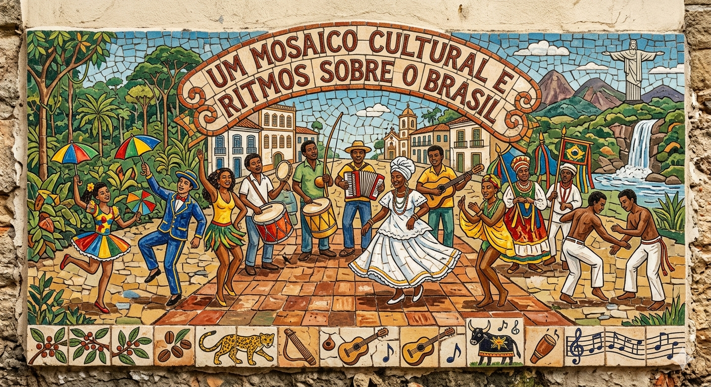

Um Mosaico Cultural em Cores e Ritmos
O Brasil é um país onde a diversidade cultural pulsa em cada canto. Suas tradições são um encontro vibrante entre influências indígenas, africanas e europeias, refletidas na música, na dança, na culinária e nas festas populares. Do samba que contagia o Rio de Janeiro ao frevo de Pernambuco, das festas juninas do Nordeste ao Bumba Meu Boi do Norte e do Centro-Oeste, o país revela uma riqueza cultural única. Essa miscigenação se manifesta também na língua, nas artes e na religiosidade, tornando o Brasil um verdadeiro caleidoscópio de cores, sons e histórias que encantam e conectam pessoas de diferentes origens.
